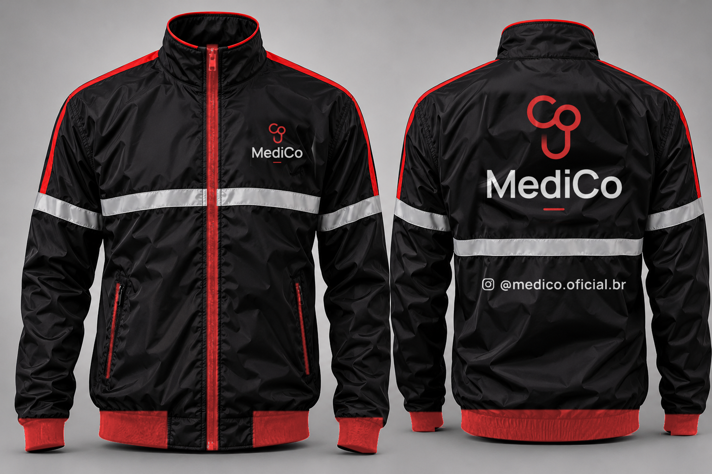

| Modelo | Jaqueta corta-vento, gola alta (sem capuz, para usar com capacete), zíper frontal inteiro, punhos e barra em ribana elástica, 2 bolsos laterais com zíper. |
| Tecido | Nylon/tactel ou poliéster 100% com acabamento impermeável (hidro-repelente); forro de tela (redinha) respirável. |
| Cores | Corpo, mangas e gola: preto Vermelho MediCo #F83E3E (aprox. Pantone 032 C): punhos, barra em ribana, vivo nas costuras dos ombros/mangas e na borda da gola, cadarço do zíper central e acabamento dos zíperes dos bolsos |
| Faixas refletivas | Prata, 5 cm, costuradas ou termocolantes (ex.: 3M Scotchlite). Faixa 1 contornando peito e mangas na altura do peito; faixa 2 só nas costas, abaixo do logo. Interromper no zíper. |
| Peito (esq. de quem veste) | Ícone vermelho + “MediCo” branco + tracinho vermelho, 9 × 7 cm, acima da faixa refletiva. Arquivo: peito-logo.pdf |
| Costas, acima da faixa 2 | Ícone vermelho + “MediCo” branco + tracinho vermelho, 30 × 25 cm, centralizado, topo a ~6 cm da costura da gola. Arquivo: costas-logo.pdf |
| Costas, abaixo da faixa 2 | Ícone do Instagram + “@medico.oficial.br” em branco, 25 × 2,4 cm, centralizado, ~6 cm abaixo da faixa. Arquivo: costas-instagram.pdf |
| Técnica | DTF (recomendado: 2 cores, branco e vermelho, em tecido escuro) ou silk com base branca. O traço do logo tem um degradê curto. |
| Grade | P · M · G · GG · XG (definir quantidade por tamanho no pedido). Medidas das artes de referência para o tamanho M. |